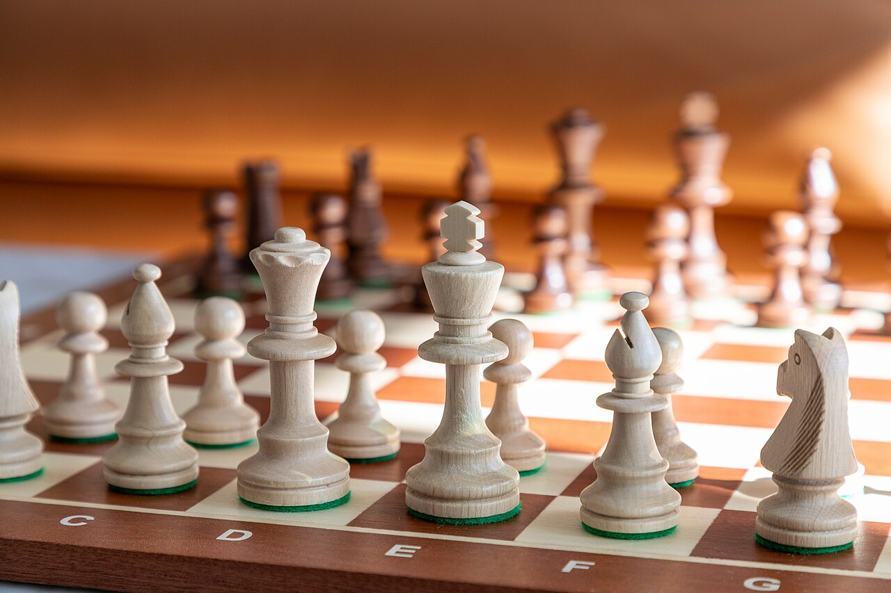

Приветстваме всички истински любители, ентусиасти и професионалисти в света на древната игра! Нашият шахматен клуб е основан с една основна мисия – да създаде сплотено и вдъхновяващо пространство за развитие на логическото мислене, стратегическото планиране, паметта и високия спортен дух сред хора от абсолютно всички възрастови групи. Шахът не е просто игра или обикновено хоби, той е изкуство, наука и бойно поле за ума, което ни учи на търпение, уважение към противника и вземане на правилни решения в критични ситуации.
Независимо дали сте напълно начинаещ, който в момента прави първите си стъпки и научава правилата за движение на фигурите, или сте опитен гросмайстор, търсещ сериозни предизвикателства, тук ще намерите перфектната среда, съмишленици и професионални ментори. Нашите врати са отворени всеки ден за свободни партии, приятелски дискусии, анализи на исторически световни първенства и специализирани тренировъчни сесии. Станете част от нашата общност и открийте магията на шахмата!